Git(Hub)
Git segítségével a munkád fontosabb részeinél el tudod menteni azt lokálisan anélkül, hogy új fileokat hoznál létre.
Majd az adott verziókat fel tudjuk tölteni a GitHubra ahol mások (ha nyilvánosra van téve) meg tudják tekinteni, le tudják tölteni.

Mi szükséges ahhoz, hogy...
...használni tudjuk a gitet?
- Git letöltése innen. Mindent el lehet fogadni, amit a telepítő alapértelmezetten kínál
- Be kell állítani a git felhasználó adatait
- A legfontosabb parancsokat egyszerűen a git beírásábal tudjuk lekérdezni
C:\Users\Admin\gitproject>git config --global user.email ".....@...."
C:\Users\Admin\gitproject>git config --global user.name "........."
C:\Users\Admin\gitproject>git
...projektünk verziókezelt legyen?
- Megcsinálni mindent a
..használni tudjuk a gitet
szekcióban - A git mindig egy konkrét mappában végzi a
verzókezelést, ezért mappánkban megnyitott parancssorban kell lefutattni git init parancsot
Ezzel a paranccsal egy lokális repository-t jött létre
C:\Users\Admin\gitproject>git init
...verzókezelt projektünket fel tudjuk tölteni a GitHub-ra?
- GitHub-ra regisztrálás itt
- Megcsinálni mindent a
..projektünk verziókezelt legyen?
szekcióban - GitHub oldalán repository-t létrehozni
- Összekötni a lokális repository-t a GitHub-on elérhető távoli (remote) repository-val
- Majd a git push parancssal lehet feltölteni
C:\Users\Admin\gitproject>git remote add origin https://github.com/felhasznalonev/repositoryneve.git
C:\Users\Admin\gitproject>git push origin master

Git
Hogyan jelezzük és tároljuk fájlainkat?
Jelzés ≠ Tárolás
Amikor még semmit nem tároltunk (kiinduló állapot), akkor mindent jelezni
kell.
Később
elegendő csak az új vagy módosított fájlok tárolásának jelzése.
C:\Users\Admin\gitproject>git add *.*
:: összes fájl és almappa jelzése
C:\Users\Admin\gitproject>git add svajc.html
:: svajc.html fájl jelzése
C:\Users\Admin\gitproject>git add *.css
:: minden css kiterjesztésű fájl jelzése
C:\Users\Admin\gitproject>git add ?vajc.*
:: minden fájl, ami a 2. betűtől "vajc" jelzése
C:\Users\Admin\gitproject>git add seged\js
:: a seged/js almappa és tartlamának jelzése
Ha esetleg eltrontottunk valamit vagy meggondoltuk magunkat a git reset paranccsal tudjuk visszavonni a jelzéseinket.
C:\Users\Admin\gitproject>git reset *.*
C:\Users\Admin\gitproject>git reset svajc.html
C:\Users\Admin\gitproject>git reset *.css
C:\Users\Admin\gitproject>git reset ?vajc.*
C:\Users\Admin\gitproject>git reset seged\js
A jelezett fájlokat a git commit
paranccsal
tudjuk
letárolni.
A tárolás neve bármi lehet, de célszerű olyan nevet adni, amiből
megtudjuk, hogy
miért változtattunk az előző verzión.
C:\Users\Admin\gitproject>git commit -m "tárolás neve"
Hogyan tudunk lekérdezni verziókat?
Ha megszeretnénk nézni, hogy mely fájljaink vannak jelezve, tárolva vagy még nem lett velük semmi csinálva, akkor a git status paranccsot kell használnunk.
C:\Users\Admin\gitproject>git status
Changes to be commited:
modified: index.html
:: Zölddel van kiírva, mert meg lett jelölve, de tárolva nem lett
Changes not staged for commit:
modified: style.css
:: Pirossal van kiírva, mert módosítva lett a fájl, de nem lett se jelezve, se tárolva
Untracked files:
js/javascript.js
:: Pirossal van kiírva, mert újonnan lett létrehozva és nem lett jelezve és tárolva se
Ha megszeretnénk nézni, az előzőleg létrehozott verziók adatait, akkor
a
git log paranccsot
kell használnunk.
A parancs a verzió azonosítószámát, azt hogy ki és mikor hozta
létre és a
verzió nevét adja meg.
Mindig a legújabb verzó van felül.
C:\Users\Admin\gitproject>git log
commit a6044b83c0003d9c50fb49cc1b4af1c4ec075bcb
:: A verzió azonosítószáma
Author: unknown <example@example.com>
:: Ki hozta létre
Date: Thu Dec 8 21:54:43 2022 +0100
:: Mikor hozta létre
Elso feltoltes
:: Verzió neve
Hogyan tudjuk megtekinteni a különbségeket a verziók között?
Tegyük fel, hogy változtattunk két fájlon (index.html, style.css) a
kiinduló
állapot
óta.
A különbséget a
módosított fájlok és az előzőleg letárolt fájlok között a git
diff paranccsal tudnánk megnézni.
C:\Users\Admin\gitproject>git diff index.html
:: Ha mindkét fájl különbséget szeretnénk látni:
C:\Users\Admin\gitproject>git diff HEAD
Tegyük fel, hogy a két módosított fájlt jeleztük is.
C:\Users\Admin\gitproject>git add index.html
C:\Users\Admin\gitproject>git add style.css
:: Ezen esetben:
C:\Users\Admin\gitproject>git diff --cached index.html
:: Ha mindkét fájl különbséget szeretnénk látni:
C:\Users\Admin\gitproject>git diff --staged
Tegyük fel, hogy a két módosított fájlt le is tároltuk.
C:\Users\Admin\gitproject>git commit -m "html és css módosítva"
:: Ezen esetben:
C:\Users\Admin\gitproject>git show HEAD
:: Vagy ha egy adott verzió és azt megelőző verzió különbségét szeretnénk lekérdezni:
C:\Users\Admin\gitproject>git show commit azonosítószáma (git log paranccsal kideríthető)
Hogyan tudunk verziókat törölni?
Minden verzió ami a megadott verziószám után lett létrehozva törlödni fog!
C:\Users\Admin\gitproject>git reset --hard commit azonosítószáma (git log paranccsal kideríthető)
Hogyan tudunk szobákat kezelni?
Alapból a git folyamatok a master
szobában zajlanak.
Ezt a git branch paranccsal ellenőrizhetjük.
C:\Users\Admin\gitproject>git branch
* master
Az általunk létrehozott szoba örökli a master szoba commit -jait.
Itt
szabadon
kipróbálhatunk bármit (tárolhatunk belőle verziókat), majd
a szobát törölve a master szobában megmarad az eredeti állapot (mintha
semmit sem csináltunk volna)
VAGY
az is
megoldható,
hogy az új szoba commit -jait érvényesítjük a master szobában is
Új szobát a git branch paranccsal tudunk létrehozni, majd szobákban váltani a git checkout paranccsal lehet.
C:\Users\Admin\gitproject>git branch szobanév
C:\Users\Admin\gitproject>git checkout szobanév
Switched to branch 'szobanév'
Ha érvényesíteni szeretnénk az új szobában létrehozott verziókat a master szobában is, akkor össze kell "olvasztani" a két szobát:
C:\Users\Admin\gitproject>git branch master
C:\Users\Admin\gitproject>git merge szobanév
Updating
Fast-forward
css/style.css | 10 ++--------
index.html | 36 ++++++++++++++++++++++++++++++++++++
2 files changed, 38 insertions(+), 8 deletions(-)
Ha szobát szeretnénk törölni először ki kell lépni abból a szobábol, majd a következő módon lehet törölni:
C:\Users\Admin\gitproject>git checkout master
Switched to branch 'master'
C:\Users\Admin\gitproject>git branch -D szobanév
Deleted branch szobanév.
GitHub
Mi történik, ha ugyanazon a gépen két személy is dolgozik vagy egy személynek több github fiókja is van?
Mivel a git azon github tárhelyhez "kötődik", amelyre először feltöltöt valaki, így el kell vel felejtetni és újra kell kéretni feltöltésnél (push), hogy lépjen be az illető a github tárhelyére.
-
Verzérlőpult -> Hitelesítőadat-kezelő -> Windows rendszerbeli hitelesítő adatok -> git bejegyzés kiválasztása -> Eltávolítás
-
C:\Users\Admin\gitproject>rundll32.exe keymgr.dll, KRShowKeyMgr
Megjelenő ablakban git kiválasztása majd Eltávolítás
-
C:\Users\Admin\gitproject>cmdkey /list
Meg kell keresni a git-es bejegyzést majd annak Target: utáni részét ki kell másolni.
C:\Users\Admin\gitproject>cmdkey /delete:kimásolt rész
Mit lehet tenni, ha belép valaki a github oldalán a tárhelyére?
Megtekintheti a létrehozott repository mappáit, illetve valamelyiket kiválasztva láthatja annak tartalmát.
Valamelyik file nevére kattintva megnézheti annak kódját illetve azok egyes verzióit.
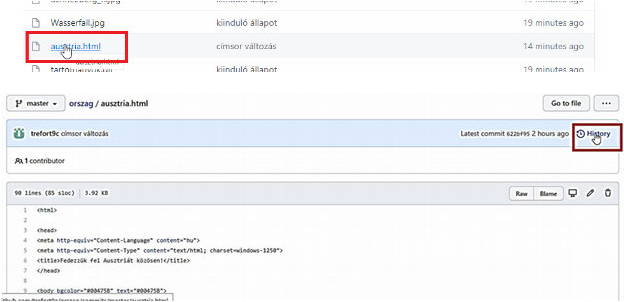- Változások az előző verziókhoz képest Split gombbal egymás mellé helyezhető a 2 verzió
- Az adott commit-hoz tartozó fájl tartalom
- Az adott commithoz tartozó fájlok listája
Szerkeszthet iletve törölhet fájlokat.
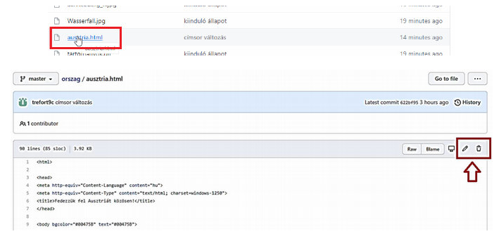Hozzáadhat új fájlokat helyben szerkesztéssel vagy betallózva.
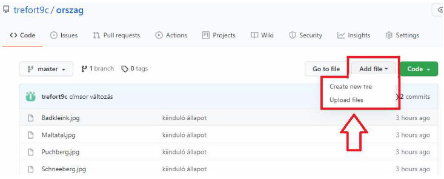Törölheti távoli repository mappáját.
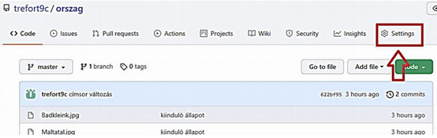Legalul:
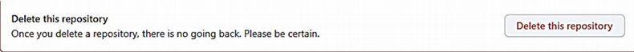Weboldal létrehozása
1.
2.
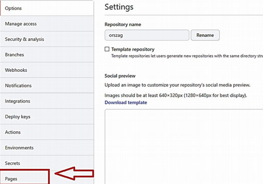3.
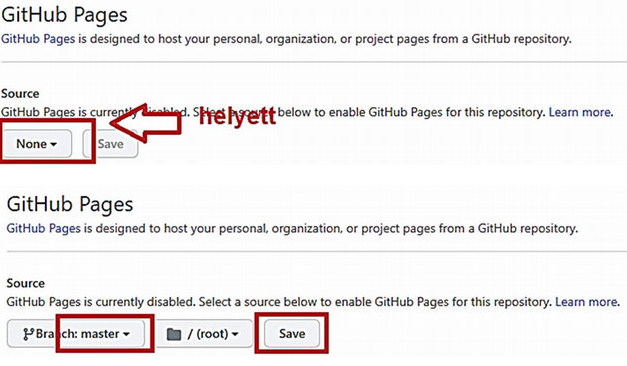4.
A weboldalad elérhető ezen a címen:
https://github felhasználó név.github.io/repository neve/fájl neve
Ha a fájlunk neve index.html nem kell külön megadni fájl nevet:
https://github felhasználó név.github.io/repository neve/
Mit lehet tenni, ha belép valaki másnak a tárhelyére a github oldalán?
Letölthetjük zip-ben a repository tartalmát, de ez nem fogja tartalmazni a verziókat, csak a legutolsó állapot lesz benne.
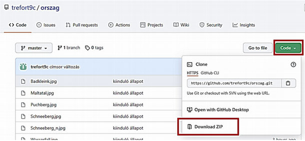Ha a verziókat is le akarjuk tölteni és nem csak a legutóbbi verziót:
C:\Users\Admin>git clone https://github.com/felhasznalonev/repositoryneve.git
Így az Admin mappábe létre jön egy repository név nevű mappa a repository tartalmával és verzióival.
Ha már leklónoztuk a repository-t és szeretnénk az új verzióhoz hozzájutni:
C:\Users\Admin>git pull origin master
Ezzel lekértük a legujabb verziót.
Hogy érhető el, hogy egy idegen github tárhely adott repository mappájába legyen jogunk feltölteni (push)?
Például:
idegen github tárhely: trefort9c
idegen távoli repository neve: orszag
saját github tárhely: nzs78
saját e-mail: nzsbp42@gmail.com
1.
A trefort9c (idegen) felhasználó lépjen be a github tárhelyére, majd:
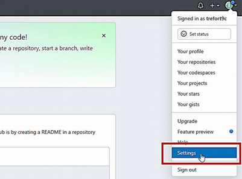2.
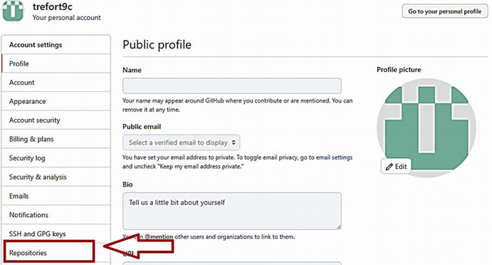3.
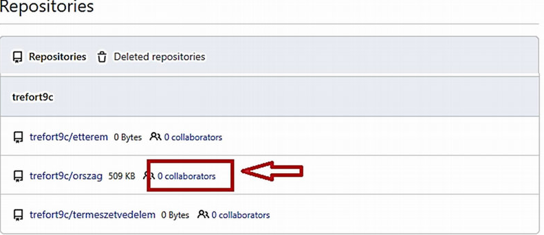4.
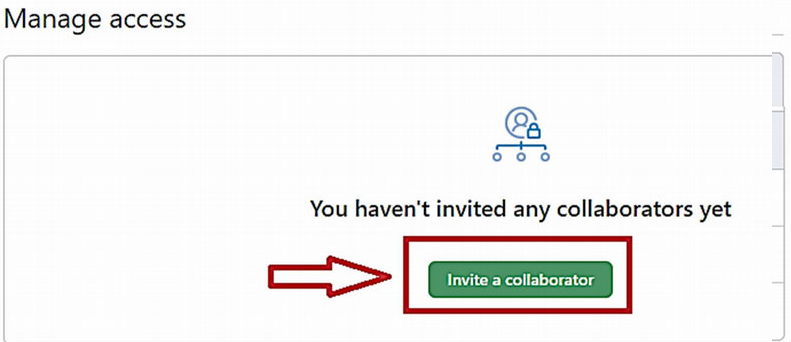5.
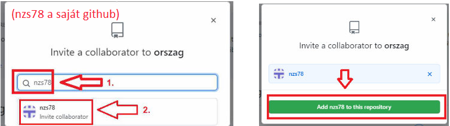6.
Ezek után a meghívott github (jelen esetben nzs78) fog kapni egy emailt arra az emailjére amellyel regisztrált a githubra.
Az emailben ide kell kattintania:
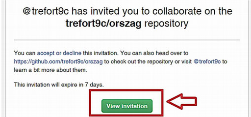7.
Utána a meghívottnak (nzs78) be kell lépni saját github tárhelyére.
Itt pedig ide kell kattintania:
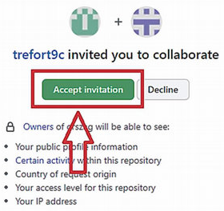8.
Amikor egy github repositoryt többen is használnak fontos, hogy mielőtt feltöltenének, előtte le kell tölteni.
C:\Users\Admin\orszag>git pull origin master
C:\Users\Admin\orszag>git push origin master